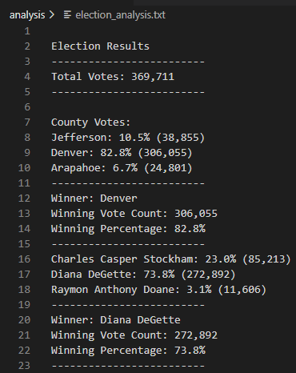

Python-Based Financial and Election
Analyses: A Case Study
Resources
- Data sources: budget_data.csv,
election_results.csv
- Software: Python 3.9.7, Visual Studio Code
1.76.1
Project Objectives
PyBank
Use the budget data provided to analyze the
financial records of a company.
The task is to create a Python script that analyzes
the records and:
- Calculates the total number of months included
in the dataset
- Calculates the net total amount of
“Profit/Losses” over the entire period
- Calculates the changes in “Profit/Losses” over
the entire period, and then the average of those changes
- Calculates the greatest increase in profits
(date and amount) over the entire period
- Calculates the greatest decrease in profits
(date and amount) over the entire period
- Exports the results to a text file in the
analysis folder
PyPoll
Use the election results provided to
complete the audit of a recent local congressional election.
The task is to create a Python script that analyzes
the records and:
- Calculates the total number of votes cast
- Retrieves the counties where the votes were
collected
- Calculates the voting results from each county
- Determines the county with the largest number
of votes
- Retrieves a complete list of candidates who
received votes
- Calculates the total number and percentage of
votes each candidate received
- Determines the winner of the election based on
the amount of votes received
- Exports the results to a text file in the
analysis folder
Results & Analysis
PyBank
There were 86 total months included in the dataset.
The net total amount was $22,564,198 and the average change on a month-to-month basis was
$-8,311.11. The greatest increase in profits was $1,862,002 which occurred in August
2016 and the greatest decrease in profits was $-1,825,558 which occurred in February 2014.
PyPoll

There were 369,711 total votes cast in the
election. The counties where the votes were collected were Jefferson County, Denver County, and Arapahoe County.

The county with the largest number of votes was
Denver County with 306,055 votes or 82.8% of the total votes.
Based on the candidate results above, the winner of
the election is Diana DeGette, who received 272,892 votes or 73.8% of the total votes.
Drawing Insights
PyBank
This script can be used to analyze any financial
data. It was able to determine on its own how many months there were, calculate the net total amount, the
average change, the greatest increase in profit and corresponding month, and the greatest decrease in profit and
corresponding month. Some modifications that can be made to the script are:
- Generalize the column names. Rather than
assuming the financial data always comes in a specific format, make the script flexible to handle column
names that might differ.
- Allow for multiple data sources. Instead of
assuming the data comes from a single .csv file, allow the user to input multiple files or connect to a
database.
- Add error handling. To prevent the script from
breaking if the data is not in the expected format or if there are any other errors, include error handling
and provide helpful error messages to the user.
PyPoll
This script can be used to analyze any election. It
was able to determine on its own how many different candidates and counties were in the results. It also tallied
the votes for each candidate, determined the winning candidate from the total votes, and found which county had
the most effect on the outcome of the election. Some modifications that can be made to the script are:
- To implement additional security measures to
ensure the integrity of the data. For example, we can add a feature that checks for any irregularities or
anomalies in the data, such as duplicate or missing votes, and alerts the administrator if any issues are
found.
- We also have the possibility of breaking down
the data even more. With this we can display the voter’s political views, gender, ethnicity and race, and
age for example.
Return to the Homepage